About
Code
setwd('~/Documents/NIAMS-27/')
group1 = readxl::read_excel('./data/Group1_Cleaned.xlsx', skip = 3)%>%
set_tidy_names(., syntactic = T)%>%
setNames(gsub('X\\.\\.|X\\.\\.\\.|X\\.\\.\\.\\.','',names(.)))%>%
setNames(gsub('\\.\\.', '\\.', names(.)))%>%
setNames(tolower(names(.)))%>%
setNames(sub('[.]$','',names(.)))%>%
dplyr::rename(length.of.menses.per.month.after = length.of.menses.per.month.after.cyc.treatment,
regularity.of.menses.after = regularity.of.menses.after.cyc.treatment,
times.pregnant.after = times.pregnant.after.cyc.treatment,
live.births.after = live.births.after.cyc.treatment,
miscarriages.and.or.abortions.after = miscarriages.and.or.abortions.after.cyc.treatment,
symptoms.of.menopause.after = symptoms.of.menopause.after.cyc.treatment,
diagnosed.with.menopause.after = diagnosed.with.menopause.after.treatment.with.cyc,
difficulty.conceiving.a.child.after = difficulty.conceiving.a.child.after.cyc.treatment
)
group2 = readxl::read_excel('./data/Group2_Cleaned.xlsx', skip = 3)%>%
set_tidy_names(syntactic = T)%>%
setNames(gsub('X\\.\\.|X\\.\\.\\.|X\\.\\.\\.\\.','',names(.)))%>%
setNames(gsub('\\.\\.', '\\.', names(.)))%>%
setNames(tolower(names(.)))%>%
setNames(sub('[.]$','',names(.)))%>%
dplyr::rename(length.of.menses.per.month.after = length.of.menses.per.month.after.cyc.treatment,
regularity.of.menses.after = regularity.of.menses.after.cyc.treatment,
times.pregnant.after = times.pregnant.after.cyc.treatment,
live.births.after = live.births.after.cyc.treatment,
miscarriages.and.or.abortions.after = miscarriages.and.or.abortions.after.cyc.treatment,
symptoms.of.menopause.after = symptoms.of.menopause.after.cyc.treatment,
diagnosed.with.menopause.after = diagnosed.with.menopause.after.treatment.with.cyc,
difficulty.conceiving.a.child.after = difficulty.conceiving.a.child.after.cyc.treatment
)
group3 = readxl::read_excel('./data/Group3_Cleaned.xlsx', skip = 3)%>%
set_tidy_names(., syntactic = T)%>%
setNames(gsub('X\\.\\.|X\\.\\.\\.|X\\.\\.\\.\\.','',names(.)))%>%
setNames(gsub('\\.\\.', '\\.', names(.)))%>%
setNames(tolower(names(.)))%>%
setNames(sub('[.]$','',names(.)))%>%
dplyr::rename(length.of.menses.per.month.after = length.of.menses.per.month.after.sle.diagnosis,
regularity.of.menses.after = regularity.of.menses.after.sle.diagnosis,
symptoms.of.menopause.after = which.menopausal.symptoms.did.you.experience,
times.pregnant.after = times.times.pregnant.after.sle.diagnosis,
live.births.after = live.births.after.sle.diagnosis,
miscarriages.and.or.abortions.after = miscarriages.and.or.abortions.after.sle.diagnosis,
difficulty.conceiving.a.child.after = difficulty.conceiving.a.child.after.being.diagnosed.for.sle
)
missing_count = group1%>%
is.na()%>%
colSums()%>%
data.frame()%>%
setNames('Group1')%>%
tibble::rownames_to_column('Question')%>%
dplyr::arrange(Group1)%>%
left_join(
group2%>%is.na()%>%colSums()%>%data.frame()%>%setNames('Group2')%>%tibble::rownames_to_column('Question'), by = 'Question'
)
kept.questions = missing_count$Question[missing_count$Group1<12]
kept.questions = setdiff(kept.questions,
c('used.art.to.get.pregnant.after.cyc.treatment'))
group1 = group1%>%dplyr::select(all_of(kept.questions))%>%dplyr::mutate(Group = 'Group1')
group2 = group2%>%dplyr::select(all_of(kept.questions))%>%dplyr::mutate(Group = 'Group2')
group3 = group3%>%dplyr::mutate(diagnosed.with.menopause.after = NA)%>%dplyr::select(all_of(kept.questions))%>%dplyr::mutate(Group = 'Group3')
cases = rbind(group1, group2)
all = rbind(cases, group3)
all = all%>%dplyr::filter(!is.na(patient))
all <- all%>%filter(clinically.diagnosed.with.poi.prior.to.sle.diagnosis!='Yes' | is.na(clinically.diagnosed.with.poi.prior.to.sle.diagnosis))
all <- all%>%filter(patient!='CYC072')Data Overview
- One person on group3 was clinically diagnosed with POI prior to SLE diagnosis. I am removing that patient from analysis. Patient number is CYC055.
- Patient CYC072 did not answer most of the questions. Discarding this patient.
- Two patients reported “Irregular, IUD in place” and “On birth control” on length of menses per month after treatment. For now, I am treating these as missing.
Code
missing_count%>%
kbl()%>%
kable_styling(bootstrap_options = c('hover', 'stripped'))| Question | Group1 | Group2 |
|---|---|---|
| patient | 0 | 4 |
| age.of.first.menses | 0 | 4 |
| use.hormonal.contraceptives.prior.to.sle.diagnosis | 0 | 4 |
| regularity.of.menses.after | 1 | 4 |
| clinically.diagnosed.with.poi.prior.to.sle.diagnosis | 1 | 4 |
| family.history.of.infertility | 1 | 4 |
| symptoms.of.menopause.after | 1 | 4 |
| diagnosed.with.menopause.after | 1 | 4 |
| times.pregnant.after | 1 | 4 |
| live.births.after | 1 | 4 |
| miscarriages.and.or.abortions.after | 1 | 4 |
| used.art.to.get.pregnant.after.cyc.treatment | 1 | 4 |
| length.of.menses.per.month.prior.to.sle.diagnosis | 2 | 5 |
| length.of.menses.per.month.after | 2 | 6 |
| regularity.of.menses.prior.to.sle.diagnosis | 2 | 5 |
| treated.for.sti | 2 | 4 |
| times.pregnant.prior.to.sle.diagnosis | 2 | 4 |
| live.births.prior.to.sle.diagnosis | 2 | 4 |
| miscarriages.and.or.abortions.prior.to.sle.diagnosis | 2 | 4 |
| difficulty.conceiving.a.child.prior.to.being.diagnosed.for.sle | 2 | 4 |
| difficulty.conceiving.a.child.after | 4 | 4 |
| age.diagnosed.with.menopause | 9 | 21 |
| which.form.of.hormonal.contraceptive | 12 | 17 |
| duration.of.hormonal.contraceptive.use | 12 | 18 |
| times.successfully.conceived.a.child.following.art | 20 | 27 |
| cycles.of.art.undergone | 21 | 27 |
| live.births.following.art | 21 | 27 |
| miscarriages.and.or.abortions.following.art | 21 | 27 |
Variables with missing data 12 or more are discarded. List of these variables are : which.form.of.hormonal.contraceptive, duration.of.hormonal.contraceptive.use, times.successfully.conceived.a.child.following.art, cycles.of.art.undergone, live.births.following.art, miscarriages.and.or.abortions.following.art
Code
all%>%dplyr::select(where(is.numeric), Group)%>%tbl_summary(., by = 'Group', type = c('age.of.first.menses') ~ 'continuous', statistic = all_continuous() ~ "{mean} ({sd})")| Characteristic | Group1, N = 201 | Group2, N = 231 | Group3, N = 431 |
|---|---|---|---|
| age.of.first.menses | 12.20 (1.67) | 12.89 (1.83) | 12.93 (1.84) |
| times.pregnant.after | |||
| 0 | 14 (70%) | 18 (78%) | 21 (49%) |
| 1 | 4 (20%) | 4 (17%) | 11 (26%) |
| 2 | 1 (5.0%) | 1 (4.3%) | 7 (16%) |
| 3 | 1 (5.0%) | 0 (0%) | 3 (7.0%) |
| 4 | 0 (0%) | 0 (0%) | 1 (2.3%) |
| live.births.after | |||
| 0 | 16 (80%) | 21 (91%) | 28 (65%) |
| 1 | 3 (15%) | 1 (4.3%) | 7 (16%) |
| 2 | 1 (5.0%) | 1 (4.3%) | 7 (16%) |
| 3 | 0 (0%) | 0 (0%) | 1 (2.3%) |
| miscarriages.and.or.abortions.after | |||
| 0 | 16 (80%) | 20 (87%) | 31 (72%) |
| 1 | 4 (20%) | 3 (13%) | 11 (26%) |
| 2 | 0 (0%) | 0 (0%) | 1 (2.3%) |
| length.of.menses.per.month.prior.to.sle.diagnosis | 6.21 (4.85) | 5.73 (5.63) | 5.24 (2.67) |
| Unknown | 1 | 1 | 0 |
| length.of.menses.per.month.after | 3.82 (3.18) | 3.90 (3.10) | 4.91 (1.92) |
| Unknown | 1 | 2 | 0 |
| times.pregnant.prior.to.sle.diagnosis | |||
| 0 | 9 (47%) | 16 (70%) | 22 (51%) |
| 1 | 3 (16%) | 1 (4.3%) | 7 (16%) |
| 2 | 4 (21%) | 5 (22%) | 9 (21%) |
| 3 | 1 (5.3%) | 0 (0%) | 1 (2.3%) |
| 4 | 2 (11%) | 1 (4.3%) | 3 (7.0%) |
| 8 | 0 (0%) | 0 (0%) | 1 (2.3%) |
| Unknown | 1 | 0 | 0 |
| live.births.prior.to.sle.diagnosis | |||
| 0 | 9 (47%) | 17 (74%) | 26 (60%) |
| 1 | 4 (21%) | 3 (13%) | 6 (14%) |
| 2 | 4 (21%) | 3 (13%) | 7 (16%) |
| 3 | 1 (5.3%) | 0 (0%) | 1 (2.3%) |
| 4 | 1 (5.3%) | 0 (0%) | 3 (7.0%) |
| Unknown | 1 | 0 | 0 |
| miscarriages.and.or.abortions.prior.to.sle.diagnosis | |||
| 0 | 14 (74%) | 20 (87%) | 33 (77%) |
| 1 | 3 (16%) | 1 (4.3%) | 8 (19%) |
| 2 | 2 (11%) | 1 (4.3%) | 1 (2.3%) |
| 3 | 0 (0%) | 1 (4.3%) | 0 (0%) |
| 4 | 0 (0%) | 0 (0%) | 1 (2.3%) |
| Unknown | 1 | 0 | 0 |
| age.diagnosed.with.menopause | 37 (7) | 36 (6) | 43 (7) |
| Unknown | 8 | 17 | 33 |
| 1 Mean (SD); n (%) | |||
Code
all%>%dplyr::select(!where(is.numeric), Group, -patient)%>%tbl_summary(., by = 'Group', statistic = all_continuous() ~ "{mean} ({sd})")| Characteristic | Group1, N = 201 | Group2, N = 231 | Group3, N = 431 |
|---|---|---|---|
| use.hormonal.contraceptives.prior.to.sle.diagnosis | 7 (35%) | 10 (43%) | 25 (58%) |
| regularity.of.menses.after | |||
| Amenorrhea | 8 (40%) | 9 (39%) | 6 (14%) |
| Oligomenorrhea | 2 (10%) | 9 (39%) | 13 (30%) |
| Polymenorrhea | 2 (10%) | 1 (4.3%) | 7 (16%) |
| Regular | 8 (40%) | 4 (17%) | 17 (40%) |
| clinically.diagnosed.with.poi.prior.to.sle.diagnosis | |||
| No | 20 (100%) | 23 (100%) | 43 (100%) |
| family.history.of.infertility | 0 (0%) | 2 (8.7%) | 4 (9.5%) |
| Unknown | 1 | 0 | 1 |
| symptoms.of.menopause.after | |||
| 0 | 0 (0%) | 0 (0%) | 1 (2.3%) |
| Amenorrhea | 1 (5.0%) | 0 (0%) | 0 (0%) |
| Amenorrhea, night sweats | 1 (5.0%) | 0 (0%) | 0 (0%) |
| Anxiety, tiredness | 1 (5.0%) | 0 (0%) | 0 (0%) |
| Dryness on her eyes, mouth, and genital area | 1 (5.0%) | 0 (0%) | 0 (0%) |
| Got menses after CYC for 2 years and was very irregular. Then no menses at all. | 0 (0%) | 1 (4.3%) | 0 (0%) |
| Heat flashes | 1 (5.0%) | 0 (0%) | 0 (0%) |
| Hot and cold sweats | 0 (0%) | 0 (0%) | 1 (2.3%) |
| Hot flashes | 0 (0%) | 2 (8.7%) | 2 (4.7%) |
| Hot Flashes | 0 (0%) | 0 (0%) | 2 (4.7%) |
| Hot flashes and chills | 0 (0%) | 0 (0%) | 2 (4.7%) |
| Hot flashes and night sweats | 0 (0%) | 1 (4.3%) | 0 (0%) |
| Hot flashes, amenorrhea | 1 (5.0%) | 0 (0%) | 0 (0%) |
| Hot flashes, tiredness | 1 (5.0%) | 0 (0%) | 0 (0%) |
| Hot flashes/Chills and mood swings | 0 (0%) | 0 (0%) | 1 (2.3%) |
| Hot/Cold Flashes | 0 (0%) | 0 (0%) | 1 (2.3%) |
| Infrequent cycle, hot flashes due to progesterone shots | 0 (0%) | 1 (4.3%) | 0 (0%) |
| Irregular menses. oligomenorrhea | 0 (0%) | 1 (4.3%) | 0 (0%) |
| Irregular menstrual and then amenorrhea | 1 (5.0%) | 0 (0%) | 0 (0%) |
| Mild fretful & hot flash | 1 (5.0%) | 0 (0%) | 0 (0%) |
| N/A | 2 (10%) | 6 (26%) | 30 (70%) |
| Night sweat, irregular periods | 0 (0%) | 1 (4.3%) | 0 (0%) |
| No | 0 (0%) | 1 (4.3%) | 0 (0%) |
| No Symptoms | 1 (5.0%) | 0 (0%) | 0 (0%) |
| None | 6 (30%) | 8 (35%) | 1 (2.3%) |
| Not sure | 0 (0%) | 1 (4.3%) | 0 (0%) |
| Sweating | 0 (0%) | 0 (0%) | 1 (2.3%) |
| Warm flashes | 0 (0%) | 0 (0%) | 1 (2.3%) |
| Weight gain, hot flaashes | 1 (5.0%) | 0 (0%) | 0 (0%) |
| Yes, hot flashes, insomnia, night sweats, graying hair | 1 (5.0%) | 0 (0%) | 0 (0%) |
| diagnosed.with.menopause.after | 8 (42%) | 5 (22%) | 0 (NA%) |
| Unknown | 1 | 0 | 43 |
| regularity.of.menses.prior.to.sle.diagnosis | |||
| Amenorrhea | 1 (5.3%) | 0 (0%) | 2 (4.7%) |
| Oligomenorrhea | 0 (0%) | 7 (32%) | 8 (19%) |
| Polymenorrhea | 2 (11%) | 2 (9.1%) | 3 (7.0%) |
| Polymenorrhea and Oligomenorrhea | 0 (0%) | 0 (0%) | 1 (2.3%) |
| Regular | 16 (84%) | 13 (59%) | 29 (67%) |
| Unknown | 1 | 1 | 0 |
| treated.for.sti | 4 (21%) | 2 (8.7%) | 10 (23%) |
| Unknown | 1 | 0 | 0 |
| difficulty.conceiving.a.child.prior.to.being.diagnosed.for.sle | |||
| No | 16 (84%) | 22 (96%) | 32 (76%) |
| No, didn't try | 0 (0%) | 0 (0%) | 3 (7.1%) |
| Yes | 3 (16%) | 1 (4.3%) | 7 (17%) |
| Unknown | 1 | 0 | 1 |
| difficulty.conceiving.a.child.after | |||
| No | 14 (82%) | 14 (61%) | 29 (69%) |
| No, didn't try | 0 (0%) | 5 (22%) | 3 (7.1%) |
| Yes | 3 (18%) | 4 (17%) | 10 (24%) |
| Unknown | 3 | 0 | 1 |
| 1 n (%) | |||
Some questions ask conditions after treatment, for example, times pregnant after CYC treatment. I removed the trailing part after “after” to make it consistant on three group of data. So, times.pregnant.after means times pregnant after CYC treatment for Group1, after CYC and GnRh for Group 2 and after SLE diagnosis for Group3.
Comparison Prior Treatment
No significant difference in age of first menses was found between groups.
Code
all%>%select(Group, age.of.first.menses)%>%ggplot() + aes(x = Group, y = age.of.first.menses)+geom_boxplot()+theme_classic()+labs(x = '', y = 'Age of First Menses')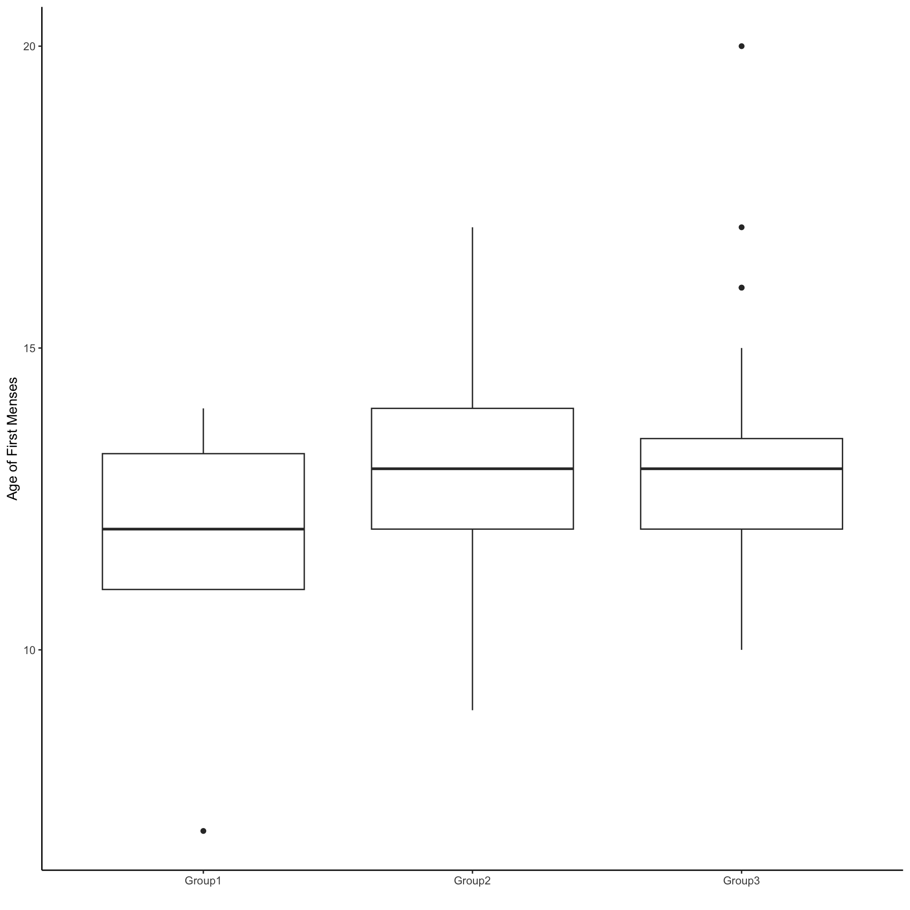
There are three data points one on each group with unually high length. One of the patient (on group2) confirmed that she had one mense of length 30 days prior SLE diagnosis. For the rest of the analysis I am considering the data points as missing. Need to double check with the patients on this account, specially if the high length that they reported was just occured once or usually.
Code
p_length_prior = ggplot(data = all, aes(x = Group, y = length.of.menses.per.month.prior.to.sle.diagnosis))+geom_boxplot()+theme_classic()+labs(x = '', y = 'Length of Menses Prior SLE')+ggthemes::scale_fill_tableau()
p_length_prior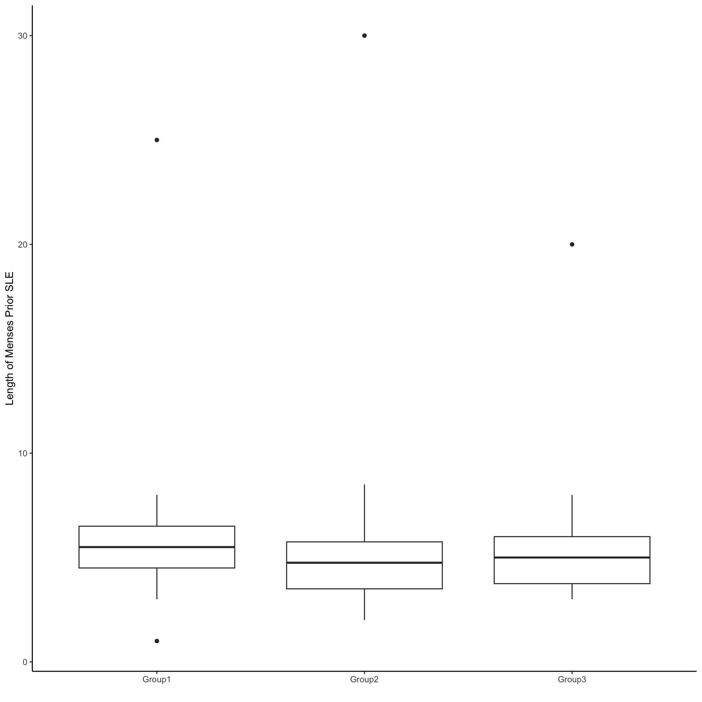
Code
all$length.of.menses.per.month.prior.to.sle.diagnosis[all$length.of.menses.per.month.prior.to.sle.diagnosis>=20]<-NACode
p1 = ggplot(data = all, aes(x = times.pregnant.prior.to.sle.diagnosis, fill = Group, y = ..prop..))+geom_bar(position = position_dodge())+theme_classic()+labs(y = 'Proportion', x = 'Pregnancy prior SLE')+theme(legend.position = 'top')+ggthemes::scale_fill_tableau()
p2 = ggplot(data = all, aes(x = Group, y = times.pregnant.prior.to.sle.diagnosis, fill = Group))+geom_boxplot()+theme_classic()+labs(x = '', y = 'Pregnancy prior SLE')+ggthemes::scale_fill_tableau()
ggpubr::ggarrange(p1, p2, common.legend = T)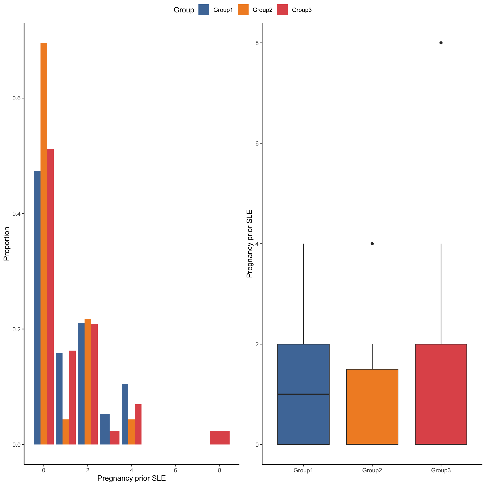
Code
p1 = ggplot(data = all, aes(x = miscarriages.and.or.abortions.prior.to.sle.diagnosis, fill = Group, y = ..prop..))+geom_bar(position = position_dodge())+theme_classic()+labs(y = 'Proportion', x = 'Miscarriages/Abortions prior SLE')+theme(legend.position = 'top')+ggthemes::scale_fill_tableau()
p2 = ggplot(data = all, aes(x = Group, y = miscarriages.and.or.abortions.prior.to.sle.diagnosis, fill = Group))+geom_boxplot()+theme_classic()+labs(x = '', y = 'Miscarriages/Abortions prior SLE')+ggthemes::scale_fill_tableau()
ggpubr::ggarrange(p1, p2, common.legend = T)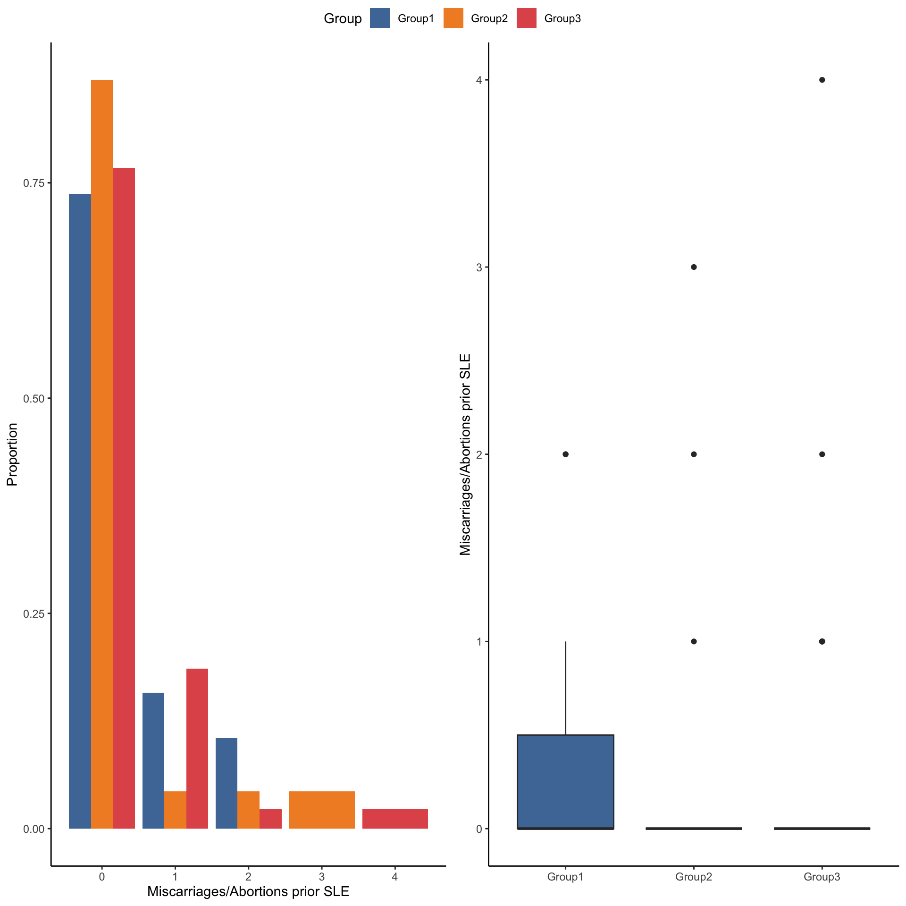
Code
p1 = ggplot(data = all, aes(x = live.births.prior.to.sle.diagnosis, fill = Group, y = ..prop..))+geom_bar(position = position_dodge())+theme_classic()+labs(y = 'Proportion', x = 'Pregnancy prior SLE')+theme(legend.position = 'top')+ggthemes::scale_fill_tableau()
p2 = ggplot(data = all, aes(x = Group, y = live.births.prior.to.sle.diagnosis, fill = Group))+geom_boxplot()+theme_classic()+labs(x = '', y = 'Pregnancy prior SLE')+ggthemes::scale_fill_tableau()
ggpubr::ggarrange(p1, p2, common.legend = T)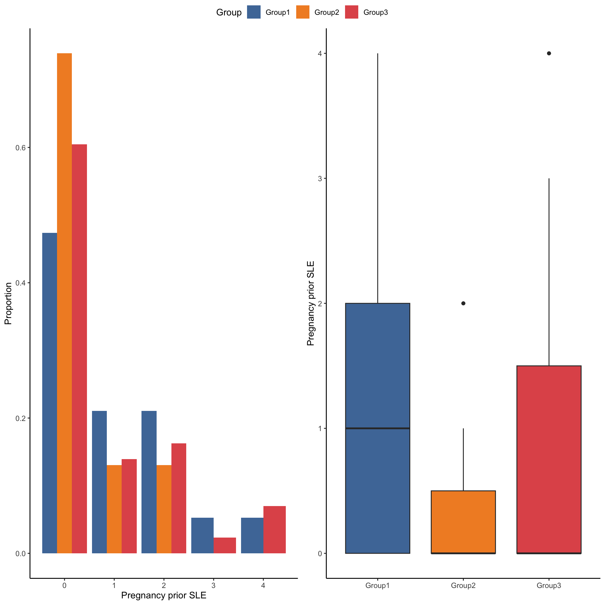
Code
ggplot(all, aes(x = regularity.of.menses.prior.to.sle.diagnosis, fill = Group, y = ..prop.., group = Group))+geom_bar(position = position_dodge(), stat = 'count')+theme_classic()+theme(axis.text.x = element_text(angle = 45))+labs(x = 'Regularity of Menses Prior SLE', y = 'Proportion')+ggthemes::scale_fill_tableau()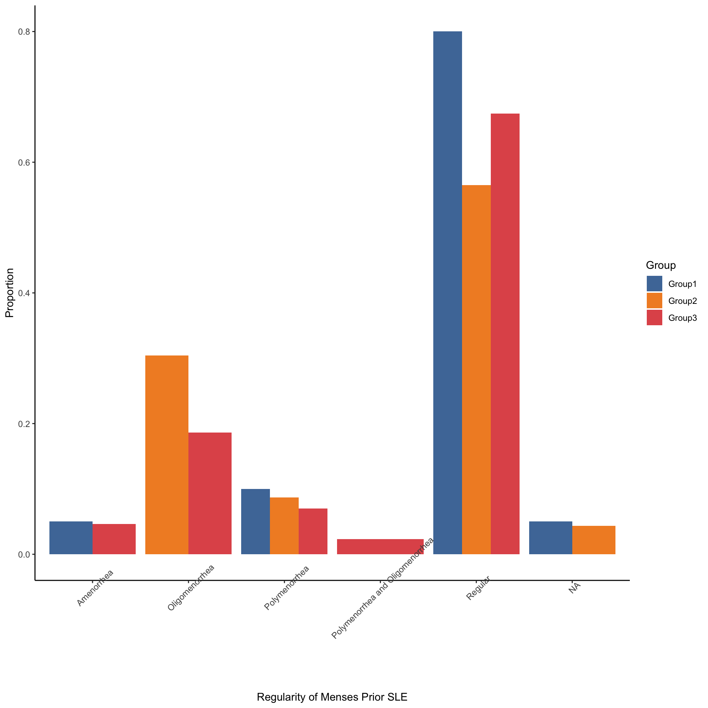
Code
ggplot(data = all, aes(x = difficulty.conceiving.a.child.prior.to.being.diagnosed.for.sle, y = ..prop.., fill = Group, group = Group))+geom_bar(position = position_dodge(), stat = 'count')+theme_classic()+labs(x = 'Difficulty Conceiving Prior SLE', y = 'Proportion')+ggthemes::scale_fill_tableau()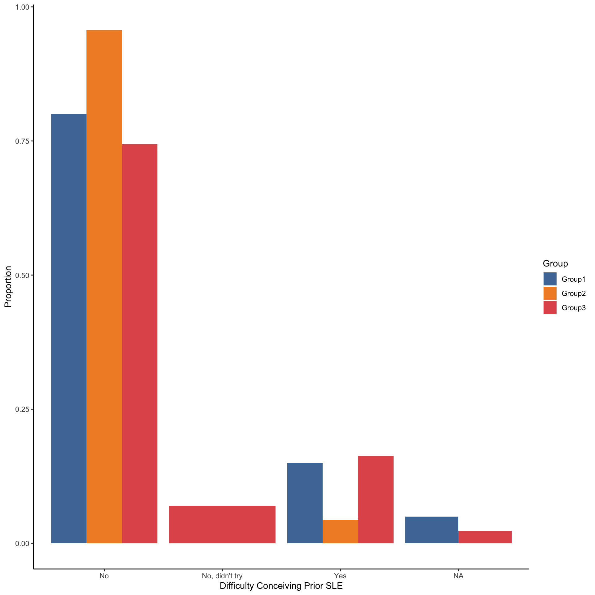
Comparison Post Treatment
Code
ggplot(data = all, aes(x = Group, y = length.of.menses.per.month.after))+geom_boxplot()+theme_classic()+labs(x = '', y = 'Length of Menses Post Treatment')+ggthemes::scale_fill_tableau()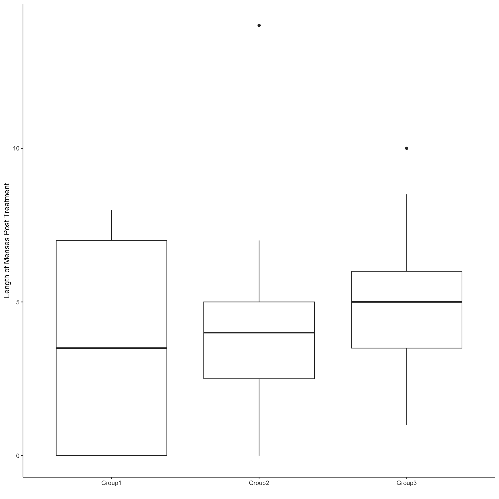
Code
p1 = ggplot(data = all, aes(x = times.pregnant.after, fill = Group, y = ..prop..))+geom_bar(position = position_dodge())+theme_classic()+labs(y = 'Proportion', x = 'Pregnancy Post Treatment')+theme(legend.position = 'top')+ggthemes::scale_fill_tableau()
p2 = ggplot(data = all, aes(x = Group, y = times.pregnant.after, fill = Group))+geom_boxplot()+theme_classic()+labs(x = '', y = 'Pregnancy Post Treatment')+ggthemes::scale_fill_tableau()
ggpubr::ggarrange(p1, p2, common.legend = T)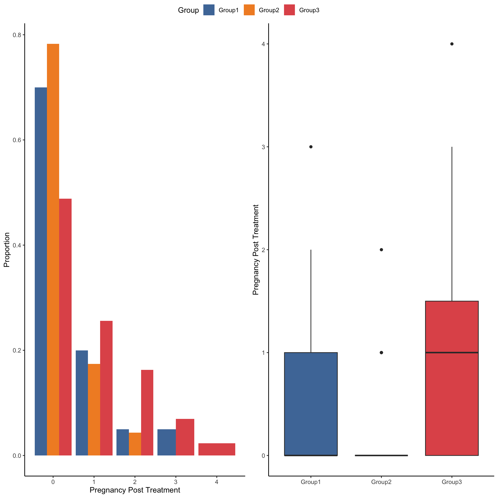
Code
p1 = ggplot(data = all, aes(x = live.births.after, fill = Group, y = ..prop..))+geom_bar(position = position_dodge())+theme_classic()+labs(y = 'Proportion', x = 'Live Births Post Treatment')+theme(legend.position = 'top')+ggthemes::scale_fill_tableau()
p2 = ggplot(data = all, aes(x = Group, y = live.births.after, fill = Group))+geom_boxplot()+theme_classic()+labs(x = '', y = 'Live Births Post Treatment')+ggthemes::scale_fill_tableau()
ggpubr::ggarrange(p1, p2, common.legend = T)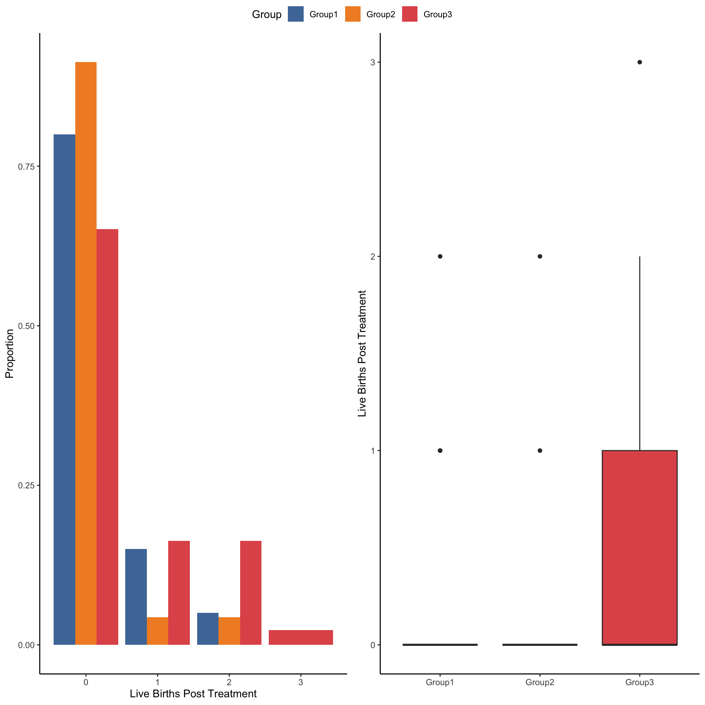
Code
p1 = ggplot(data = all, aes(x = miscarriages.and.or.abortions.after, fill = Group, y = ..prop..))+geom_bar(position = position_dodge())+theme_classic()+labs(y = 'Proportion', x = 'Miscarriage/Abortion Post Treatment')+theme(legend.position = 'top')+ggthemes::scale_fill_tableau()
p2 = ggplot(data = all, aes(x = Group, y = miscarriages.and.or.abortions.after, fill = Group))+geom_boxplot()+theme_classic()+labs(x = '', y = 'Miscarriage/Abortion Post Treatment')+ggthemes::scale_fill_tableau()
ggpubr::ggarrange(p1, p2, common.legend = T)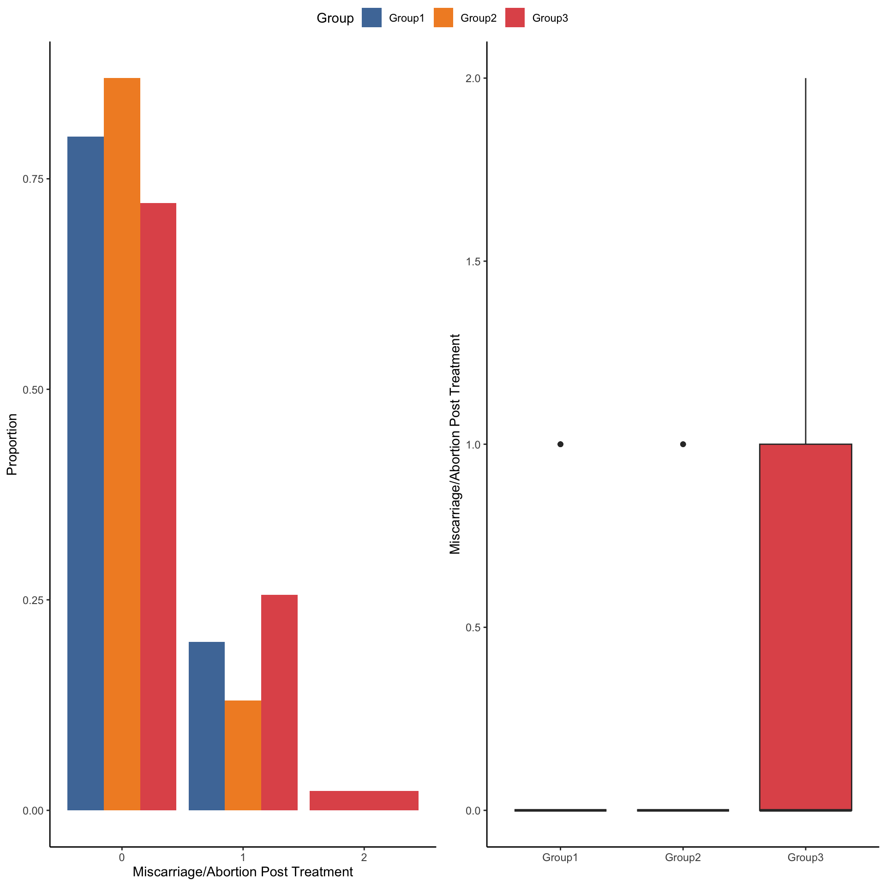
Code
ggplot(all, aes(x = regularity.of.menses.after, fill = Group, y = ..prop.., group = Group))+geom_bar(position = position_dodge(), stat = 'count')+theme_classic()+theme(axis.text.x = element_text(angle = 45))+labs(x = 'Regularity of Menses Post Treatment', y = 'Proportion')+ggthemes::scale_fill_tableau()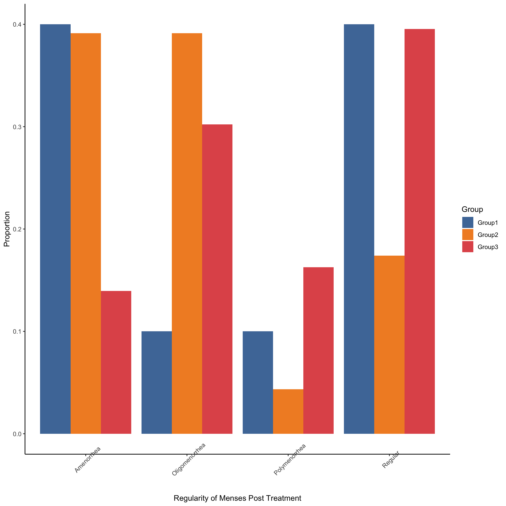
Code
all%>%dplyr::mutate(regularity.of.menses.after.polyoligo = dplyr::recode(regularity.of.menses.after, 'Oligomenorrhea' = "Irregular", 'Polymenorrhea' = 'Irregular'))%>%
ggplot()+ aes(x = regularity.of.menses.after.polyoligo, fill = Group, y = ..prop.., group = Group)+geom_bar(position = position_dodge(), stat = 'count')+theme_classic()+theme(axis.text.x = element_text(angle = 45))+labs(x = 'Regularity of Menses Post Treatment', y = 'Proportion')+ggthemes::scale_fill_tableau()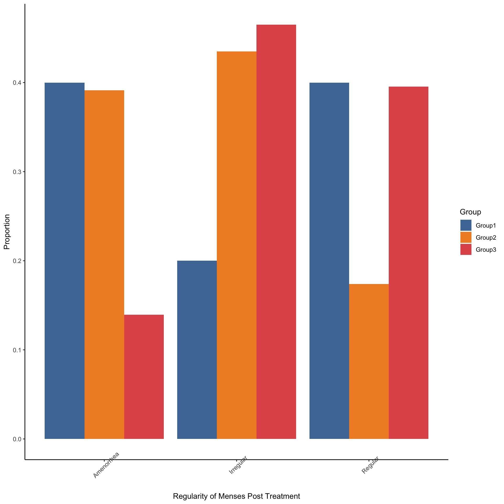
Code
ggplot(all, aes(x = difficulty.conceiving.a.child.after, fill = Group, y = ..prop.., group = Group))+geom_bar(position = position_dodge(), stat = 'count')+theme_classic()+theme(axis.text.x = element_text(angle = 45))+labs(x = 'Difficulty Conceiving Post Treatment', y = 'Proportion')+ggthemes::scale_fill_tableau()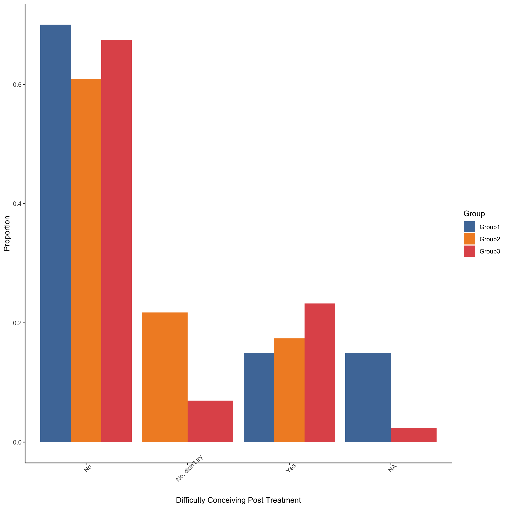